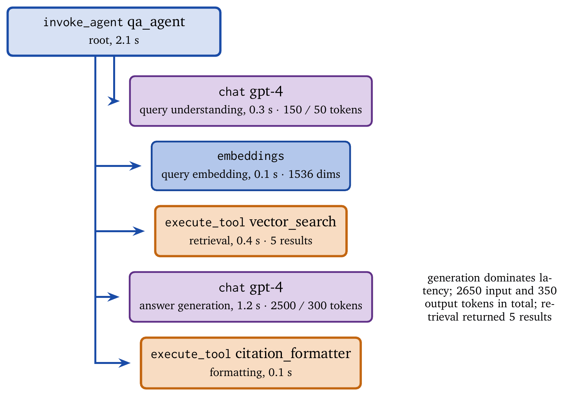
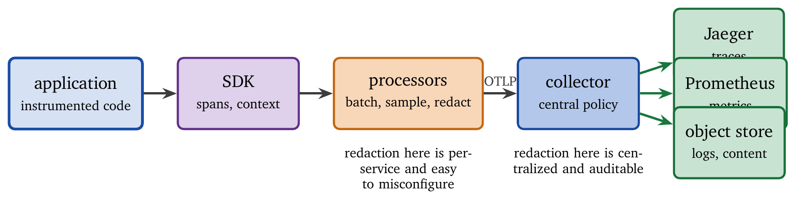
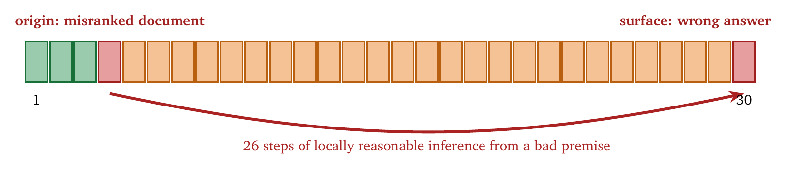

« Alignment, Policies, and Constraint Enforcement | Contents | Evaluation: Stability, Cost, and Behavioral Fidelity »
Part III: Observability and EvaluationChapter 14. Trace Semantics and Agent Telemetry
An agent fails in production. The input, the output, and the bill are available. The forty decisions in between happened, produced the failure, and left no record.
What follows is familiar. Someone proposes a prompt change. Someone else proposes a different model. Both are guesses, both are plausible, and neither can be evaluated, because the evidence that would settle the question was never written down. Fixes made in this environment are superstitious: the change ships, the failure stops recurring for a week, and nobody knows whether the two facts are related. Observability is what converts that argument into an investigation.
Agent systems make observability harder than conventional services do. A typical microservice executes deterministic code paths with explicit control flow. An agent executes a stochastic program whose control flow is partly synthesized at runtime: it plans, chooses tools, retries, branches, and composes outputs from retrieved context. Its failures are often semantic rather than operational, so the system can be healthy by CPU and error-rate metrics and still be wrong, unsafe, or wasteful.
This chapter makes traces first-class. We define trace semantics, a structure for representing an agent’s execution as records that can be stored, queried, replayed, and audited. We then develop telemetry that captures metrics, logs, and traces with bounded overhead and bounded privacy risk. Finally we analyze causality in agent executions, so that cost, latency, and failure can be attributed to specific decisions. The treatment draws on distributed systems (OpenTelemetry, Jaeger, Zipkin), database systems (query plans, execution traces), and performance engineering (the USE method, latency histograms). The goal is an agent that explains itself: what it did, why, what it cost, and what went wrong.
14.1 The Observability Problem
Observability is the ability to infer a system’s internal state from its externally visible outputs. For agents it answers five operational questions: what happened (the sequence of actions, tool calls, model calls, retries, and decisions), why (the decision context and the factors that influenced selection), how long (latency at each step and end to end, including queueing and backoff), how much (cost in tokens, dollars, API calls, and other billable resources), and what went wrong (root cause and contributing causes). These questions must be answerable from telemetry without reproducing the incident in production. Reproduction is expensive, sometimes impossible because the context has changed, and often unsafe because it may repeat harmful actions.
14.1.1 Observability and Monitoring
Monitoring checks predefined conditions: is latency below the objective, is the error rate acceptable, is cost below budget? Monitoring is necessary and insufficient. Observability supports questions nobody thought to ask. When a novel failure occurs, observability supplies the raw material for forming and testing hypotheses; the distinction mirrors that between testing, which validates known invariants, and debugging, which investigates unknown problems.
Agents need observability more than conventional systems for four reasons. Control flow is synthesized, so the agent decides its own sequence of steps. Failures are semantic, so wrong answers and unsafe actions may raise no exception. Cost is a first-class service objective, so token pricing and tool billing require precise attribution. And reasoning is a dependency, so a diagnosis often depends on what the agent believed at the time.
Two engineering constraints follow. Telemetry must preserve the causal relations between steps (parentage, dependency links, propagation context); without causality, debugging becomes archaeology. And telemetry must observe payload discipline: raw prompts, retrieved documents, and tool results may contain personal data, secrets, or proprietary content, so observability cannot simply log everything and must support selective capture, redaction, and access control.
14.1.2 The Three Pillars
Observability rests on logs, metrics, and traces, which answer different questions and scale differently. Logs are timestamped records of discrete events, high in cardinality and dimension, and best for explaining specific failures: stack traces, error messages, unusual tool outputs. Metrics are numeric measurements aggregated over time, low in cardinality and optimized for alerting and trends; they answer “is something wrong overall?” and never “why did request \(X\) fail?” Traces connect events across time and components; a trace represents a complete unit of work, a user request and everything it caused, and it is the backbone of agent observability because agent debugging depends on request-level causality: this tool call happened because the agent chose that plan step, on the basis of these retrieved documents.
| Pillar | Cardinality | Use case | Example |
|---|---|---|---|
| Logs | High | Debug specific events | “Tool X failed with error Y” |
| Metrics | Low | Monitor aggregate health | “P99 latency = 2.3s” |
| Traces | Medium | Understand request flow | “Request took 5 steps, 1.2s total” |
The practical workflow is that metrics detect an anomaly (a latency spike, a cost surge, a quality drop), traces localize it to a path (retrieval followed by retries), and logs explain the detailed failure (a tool timeout, a malformed payload).
14.2 Trace Structure
A trace is a directed acyclic graph of spans representing a unit of work. The graph is the representation of causality in a tool-using agent’s execution.
14.2.1 Spans
A span is the atomic unit of tracing, representing a single operation:
Span {
trace_id: TraceID, // Identifies the overall trace
span_id: SpanID, // Identifies this span
parent_span_id: SpanID?, // Parent in the DAG (null for root)
operation_name: String, // What this span represents
start_time: Timestamp,
end_time: Timestamp,
status: Status, // OK, ERROR, UNSET
attributes: Map<String, Value>, // Key-value metadata
events: List<Event>, // Timestamped annotations
links: List<Link> // References to related spans
}Spans should be bounded in time and meaning: “execute tool call,” “embed query,” “generate answer.” Coarse spans hide where time and cost accrue; fine spans explode telemetry volume. Parent–child relations express containment and synchronous causality (the child occurred as part of the parent). Links express non-tree causality: fan-in, fan-out, batching, asynchronous callbacks, and cross-trace relationships such as a background evaluation referencing the original request. Spans carry a kind, and for agents the kinds matter for cost and attribution: client spans are outbound calls (model provider, tool API), server spans are inbound handling (a tool server receiving a call), and internal spans are in-process work (prompt assembly, parsing, ranking).
A span is useful only if its trace context propagates correctly across thread boundaries, network calls, tool servers, and sub-agents. Broken propagation produces disconnected traces and destroys causal analysis. In an agent system, propagation must cover model calls (HTTP clients), tool calls (HTTP, RPC, or local functions), sub-agent invocations (in-process or remote), and background evaluation tasks (asynchronous, with links).
14.2.2 Agent-Specific Span Types
OpenTelemetry’s GenAI semantic conventions [9] define standard span types for agent operations, and standardization matters because it enables cross-vendor tooling, consistent dashboards, and portable queries. Model spans (gen_ai.operation.name = chat) represent calls to a language model, with attributes for the requested model, the temperature, and the input and output token counts; their duration runs from request submission to the final token. Agent spans (invoke_agent) represent an agent or a structured agent step such as a planner or executor, with attributes for the agent’s name and identifier and the conversation identifier; their children are model calls, tool executions, and sub-agent invocations. Tool spans (execute_tool) represent tool executions, with attributes for the tool’s name and type; raw arguments and results may contain secrets, so hashes, schema-validated summaries, redacted views, or references to secure blob storage are preferred. Embedding spans (embeddings) represent embedding generation, with dimension count and token usage; they often dominate retrieval pipelines by volume and are typically sampled.
Agent observability benefits from further attributes beyond the base conventions: plan attributes (plan identifier, step index, chosen tool, retry policy), retrieval attributes (corpus identifier, top-\(k\), filter predicates, result count), safety attributes (policy decisions and whether approval was required), and versioning attributes (prompt template version, policy version, model configuration hash). The versioning attributes are essential for regressions: when quality drops, the traces must be correlated with the exact prompt, policy, and model version in effect.
14.2.3 Example Trace
Figure 14.1 shows the trace of a retrieval-augmented agent answering a question.

The trace supports several classes of question. Latency decomposition: answer generation dominates at 1.2 s. Token accounting: 2,650 input tokens and 350 output tokens. Pipeline correctness: retrieval returned five results, so a low-quality answer points at retrieval quality. Change analysis: comparing across prompt versions shows whether query-understanding tokens grew because the system prompt lengthened. A robust trace would also record the prompt and policy versions, the retrieval corpus version, and evaluation events attaching groundedness and relevance scores.
14.3 Telemetry Collection
Collecting telemetry requires instrumentation: code that creates spans, propagates context, and exports data. In agent systems it must also address payload discipline, since prompts and tool results are large and sensitive.
14.3.1 Instrumentation Approaches
Manual instrumentation offers maximum control:
with tracer.start_as_current_span("execute_tool") as span:
span.set_attribute("gen_ai.tool.name", tool_name)
result = tool.execute(args)
span.set_attribute("gen_ai.tool.call.result", result)Its failure modes are inconsistent attribute names and types that break queries, missing spans from developer omission, and excessive payload capture. Auto-instrumentation reduces the burden, as in OpenAIInstrumentor().instrument(), which traces every call to that client; it gives rapid coverage and may omit domain-specific context such as plan steps and policy decisions, and it risks capturing more than intended. Framework-native instrumentation, such as LangSmith for LangChain, gives the richest semantics at the cost of lock-in. A practical hybrid uses auto-instrumentation for common libraries (model clients, HTTP, databases, vector stores), adds manual spans at semantic boundaries (plan step, tool gate, policy engine), and enforces a schema registry for attribute names.
14.3.2 The OpenTelemetry Pipeline
OpenTelemetry defines a standard pipeline, shown in Figure 14.2: application, SDK, processor, exporter, collector, backend.

The SDK manages span lifecycle, context propagation, attribute typing, and batching and sampling hooks. Processors operate on the stream: a batch processor reduces overhead, a sampling processor reduces volume, a redaction processor removes sensitive fields, and an enrichment processor adds deployment metadata such as region, build, and prompt version. Exporters send telemetry, with OTLP as the default. The collector centralizes policy, fanning out to backends and enforcing organization-wide sampling and redaction. Backends store and query, with different backends for different pillars. The key operational pattern is to perform sensitive transformations in the collector rather than only in application code.
14.3.3 GenAI-Specific Telemetry
Generative workloads introduce requirements that standard tracing did not anticipate [9]. Large payloads: prompts, retrieved documents, and tool results can be megabytes, and span attributes were not designed for that, so store small summaries (lengths, hashes, identifiers) as attributes, attach larger content as events only when sampled or on error, and keep full content in secured blob storage referenced by an opaque identifier. Streaming responses: represent the whole generation as one span and add events for time to first token, tokens per second, and interruption or truncation, avoiding per-token events in production. Multi-turn conversations: link traces with gen_ai.conversation.id and session.id, and record the turn index to analyze drift within a conversation. Cost attribution: record input and output tokens on every model span, tool billing units on tool spans, and retries explicitly, so that multiplicative cost is visible. Content capture: debugging sometimes requires prompt and response capture, and it must be opt-in and access-controlled; an environment switch such as OTEL_INSTRUMENTATION_GENAI_CAPTURE_MESSAGE_CONTENT is a useful operational control, and enterprise practice adds per-tenant and per-endpoint capture policies, automatic redaction, and role-based access to stored content.
14.4 Metrics for Agent Systems
Metrics provide aggregate views. They are the fastest signal for detection and the most scalable for trends.
14.4.1 Core Metrics
A minimal metric set covers requests, cost, and quality. Request metrics are gen_ai.client.operation.duration (a latency histogram by operation type), gen_ai.client.operation.count (a counter by status), and gen_ai.client.token.usage (counters for input and output tokens). Cost metrics are the total, the per-request histogram, and the breakdown by model. Quality metrics are the evaluation-score distributions for groundedness, relevance, and correctness, the error rate by failure class (timeouts, policy denials, tool failures), and the retry count per request. Agent systems need two further families: tool-utilization metrics (calls, latency, and error rate per tool, and fan-out per request) and control-plane metrics (policy decisions, sandbox blocks, human approval latency and rate). The last family matters because many agent incidents are policy-related rather than infrastructure-related.
14.4.2 Latency Analysis
Agent latency decomposes as \[T_{\text{total}} = T_{\text{queue}} + T_{\text{model}} + T_{\text{tool}} + T_{\text{network}} + T_{\text{processing}},\] covering waiting for capacity, inference including the streaming tail, tool execution including remote latency, transport overhead (TLS, retries, DNS), and in-process work (prompt assembly, parsing, ranking, formatting). Traces give the exact decomposition per request; metrics give distributions over time. The 99th-percentile latency is usually dominated by tail phenomena: transient tool slowness, provider throttling, large contexts slowing generation, and queueing cascades under load. Capturing queue time and retry backoff in spans is therefore essential; without it, latency is misattributed to the model.
14.4.3 Token Economics
Token consumption drives both cost and latency, and token metrics should answer whether prompts are bloated by excess context, whether retrieval results are too large, whether retries repeat identical prompts, and which endpoints or user segments drive cost. Three derived quantities help. Token efficiency, output tokens over input tokens, is a diagnostic: very low values suggest bloated context or verbose system prompts, and very high values suggest insufficient grounding. Context utilization, tokens used over the window size, warns of truncation at the high end and wasted budget at the low end. Unit cost, total cost over successful outcomes, forces retries and failures into the accounting and is often the most honest cost metric; a system that works eventually may have a catastrophic unit cost.
14.5 Causality and Attribution
Observability earns its cost when it supports causal diagnosis: what caused a failure and what would have prevented it, beyond what happened.
For agents there is a specific reason this is hard. The step where an error surfaces is usually not the step that caused it. A wrong answer at step 30 traces back to a document misranked at step 4, and everything between is locally reasonable inference from a bad premise. Figure 14.3 shows the pattern. Latency attribution is a solved problem borrowed from distributed tracing; failure attribution is an active research area.

14.5.1 Causal Chains
Agent behavior forms causal chains: a user query leads to query understanding (a model call), which leads to a retrieval decision, which leads to a vector search (a tool call), which leads to document ranking, which leads to answer generation. Traces encode this through parent–child relations and links, and causal semantics require discipline. Any point where the agent selects among alternatives (tool A or B, retry or abort, retrieve or answer directly) should be represented explicitly as a span or an event; without this one cannot diagnose why a path was taken. And the state that influenced a decision (retrieved document identifiers, tool response fingerprints) should be stored as stable references, so that the decision can be reconstructed.
14.5.2 Attribution Analysis
Latency attribution uses self-time against child-time: a span’s self-time is its duration minus the sum of its children’s durations, and large self-time indicates prompt assembly and serialization overhead, synchronous waiting not represented as a child span, or framework overhead. If self-time is always near zero, the instrumentation is too coarse and hides local work.
Cost attribution reads token usage from model spans and billing units from tool spans, and identifies the optimization targets: reduce input tokens through context trimming and retrieval compression, reduce the number of model calls through plan efficiency, replace an expensive model with a cheaper one where safe, and cache stable results such as embeddings and retrieval.
Error attribution cannot use “first error span wins.” The first error is often a downstream manifestation (answer generation failed because the context overflowed) and the contributing cause is upstream (retrieval returned too many documents). Error attribution should capture the primary error span on the critical path, the contributing spans (largest token and latency contributors), and the policy decisions that altered behavior.
14.5.3 Counterfactual Analysis
With trace structure and attribution in place, counterfactual questions become answerable. Model substitution: replace \(T_{\text{model}}\) with baseline latencies for another model, replace cost using its pricing, and estimate the quality effect from offline evaluation. Context reduction: reduce input tokens by 30%, predict the latency decrease, and evaluate whether quality would degrade. Retrieval variation: replay the trace with different retrieval results and compare outcomes, to determine whether a failure is retrieval-driven or generation-driven. Counterfactuals require replayable inputs (identifiers, hashes, stable references) and versioned configurations (prompt, policy, and model hashes).
14.5.4 Failure Attribution
Latency attribution divides a duration among spans, and arithmetic settles it. Failure attribution asks which agent and which step is responsible for a wrong outcome, and nothing about it is arithmetic. The task became a defined research problem over the past year, complete with a benchmark. Seeing the Whole Elephant formalizes it for multi-agent systems and measures how well existing methods identify the responsible agent and the decisive step [24]. The headline finding is the one from Figure 14.3: error surfacing and error origin are frequently many steps apart, and methods that inspect the failing step in isolation attribute badly.
Several families of approach have emerged. Temporal-semantic search treats the trajectory as a sequence and looks for the step where the semantic state diverged from a correct one; StepFinder locates the decisive step this way [21], and TRAJDEBUG traces an error’s lifecycle from introduction through amplification to manifestation [22]. Dependency and influence structure uses the causal graph rather than the time order; dependency-guided search prunes candidate causes by following data dependencies [14], adaptive influence graphs weight how strongly each step influenced the outcome [16], and causal graph tracing has been applied to root-cause analysis in deployed multi-agent systems [13]. Hypothesis verification generates candidate explanations and tests them rather than classifying the trace in one pass; VerifyMAS takes this approach [23]. Learned attribution trains a model on annotated failed runs; AgentRx releases a benchmark of manually annotated failures [11], and lightweight graph neural networks over the trajectory graph are competitive with model-based reasoning at a fraction of the cost [15].
The engineering implication is what matters. Every one of these methods consumes the trace, and each needs specific structure: explicit decision-boundary events, stable references to the evidence each decision consulted, and inter-agent message edges. A trace that records only spans and durations supports latency attribution and none of this. The rules stated above, decision boundaries as first-class events and inputs stored as stable references, are the difference between a system where failure attribution is a tooling choice and one where it is impossible in principle.
14.5.5 Silent Failure
The failures that hurt most are the ones nothing reports. A longitudinal study of a production agent runtime catalogs silent failures: runs that complete, return plausible output, raise no error, and are wrong [20]. Operational monitoring is blind to these by construction, because every signal it watches, error rate, latency, exit code, is green.
Detecting them requires signals derived from the trace’s semantic content rather than its operational envelope: attribution failures in which an output claim has no supporting evidence in the retrieved set, gate decisions inconsistent with comparable past cases, tool results discarded without being read, and trajectories that revisit a state they already visited. None of these is an error; all of them are evidence. Chapter 15 takes up measurement of this class. The observability requirement is that the trace record enough semantics to compute such signals offline, which is a schema decision made long before the incident.
14.5.6 Tooling
Practical toolkits have begun to consolidate these ideas: open-source observability with attribution and recovery support [10], structured logging frameworks designed for agent auditability [12], OpenTelemetry-based instrumentation with fault injection so that attribution methods can be tested against known-injected faults [18], and corpus-level diagnostics that surface systematic problems across many traces rather than debugging one at a time [17]. The last category deserves emphasis. Most debugging effort goes into single traces, and most value is in the aggregate: a failure mode occurring in 3% of runs is invisible one trace at a time and obvious across ten thousand. Corpus-level diagnostics is where observability stops being forensics and becomes engineering. A related survey covers evidence tracing and execution provenance more broadly [19], which is the right framing for regulated deployment: what the agent did, what evidence it relied on, and whether that evidence supports the conclusion.
14.6 Agent Debugging
Debugging an agent consists of isolating semantic failures, reconstructing why a decision path was taken, and controlling what the investigation costs.
14.6.1 Failure Taxonomy
Operational failures are API errors (rate limits, timeouts, unavailability), tool failures (external service down, schema mismatch, invalid inputs), and resource exhaustion (context overflow, memory limits); they are diagnosed from span status, exception events, error codes, and retry patterns. Semantic failures are wrong answers (incorrect, off-topic, hallucinated), policy-violating output (unsafe, leaking data), and incoherent or incomplete output; they are diagnosed from evaluation events, human feedback, and content inspection under access control. Efficiency failures are excessive retries and backoff loops, unnecessary tool calls, repeated retrieval with identical queries, and bloated prompts; they are diagnosed from token and tool metrics, trace fan-out, and repeated span patterns. A common production incident is efficiency collapse, in which the system remains correct and becomes too expensive or too slow through retries or prompt growth; traces are essential to see it.
14.6.2 Debugging Workflow
A disciplined workflow prevents thrash. Detect: a metric triggers an alert (error spike, latency regression, cost surge, quality drop). Localize: retrieve representative traces, filtered by time window and endpoint, separated by status, stratified by evaluation-score bin, and compared against a healthy baseline window. Examine: inspect trace structure for common critical paths, repeated patterns (retry loops, tool fan-out), and changes in prompt, policy, or model version. Diagnose: use attribution to find which spans explain the latency or cost increase and which attributes correlate with low quality. Fix: apply targeted changes (adjust retrieval, tighten prompts, add caching, add guardrails against pathological loops). Verify: deploy, then confirm the metric improvement, the expected change in trace structure, and stable or improved quality.
14.6.3 Evaluation Integration
Observability must include quality signals, or the system will be optimized for cost and latency while quality silently degrades. A common pattern attaches evaluation results as span events [9]:
Event {
name: "gen_ai.evaluation.result",
attributes: {
"gen_ai.evaluation.metric": "groundedness",
"gen_ai.evaluation.score": 0.85,
"gen_ai.evaluation.score.label": "good"
}
}Evaluation events enable correlation of quality with trace attributes (prompt version, retrieval corpus), automated tail sampling of low-quality traces, alerting on quality regression, and targeted debugging of semantic failures. Evaluation should be staged: inline lightweight checks (citation presence, length bounds), asynchronous deeper evaluation (a model judge or retrieval-grounded check), and periodic human review to calibrate the evaluator.
14.7 Observability Architecture
Observability is an architecture rather than a set of instrumentation calls. It governs how data flows, how it is sampled, how it is secured, and how it is queried.
14.7.1 Collection Architecture
The architecture follows the OpenTelemetry pipeline of Figure 14.2: instrumented model calls, tool calls, the agent loop, and framework logic feed an SDK, which exports over OTLP to a collector with receivers, processors, and exporters, which fans out to a trace backend, a metrics backend, and a log or object store. Two requirements are specific to agents. Captured prompts and responses must be stored in a secure data plane with stricter access control than general telemetry. And the trace must record enough provenance (prompt version, policy version, tool versions) to reproduce and compare behavior across deployments.
14.7.2 Sampling Strategies
Full capture is often impractical. Head-based sampling decides at trace start; it is simple, cheap, and consistent across services, and it misses rare events such as semantic failures and adversarial prompts. Tail-based sampling decides after the trace completes, capturing all errors, all high-latency traces, and all low-quality traces, at the cost of buffering and collector complexity. Adaptive sampling raises rates during incidents and canary windows and varies them per endpoint or tenant. For agents, tail-based sampling is typically the most valuable, because errors and low-quality responses are disproportionately important, costs explode on rare pathological traces, and quality regressions appear in a small subset of traffic. A recommended baseline keeps 100% of error traces, 100% of traces with an evaluation score below threshold, and a small uniform sample of successful traces for comparison.
14.7.3 Data Retention
Telemetry volume is dominated by high-cardinality traces and any captured content, and retention must balance debugging value, cost, and compliance. Tiered storage keeps hot data (seven days) at high resolution, warm data (thirty days) sampled, and cold data (one year) as aggregates and selected traces. Selective retention keeps all error and low-quality traces, traces for features under rollout, and only aggregates for routine traffic. Compliance requires redaction before long-term storage, encryption at rest, and access logs with chain of custody. A useful principle separates trace metadata from content: keep small metadata (identifiers, durations, counts) longer, and raw content (prompts, documents) shorter and only when strictly needed.
14.8 Production Observability
Production observability is the operational surface: dashboards, alerts, and incident response.
14.8.1 Dashboard Design
Dashboards answer three questions: is the system healthy, is it safe, is it within budget? A health overview shows request rate, error rate, saturation indicators (queue depth, concurrency), latency percentiles by operation type, and tool availability. Cost tracking shows tokens over time by model and endpoint, the cost-per-request distribution, and budget burn-down with projection. Quality monitoring shows evaluation-score distributions and trends, quality by prompt and corpus version, and human feedback with escalation rates. Every panel should support drill-down: a spike in tail latency pivots to representative traces, a quality regression pivots to the lowest-scoring traces, a cost surge pivots to the traces with the highest token usage. A target for enterprise systems [4] is a mean time to detection under five minutes for critical issues, which requires both good metrics and high signal-to-noise alerts.
14.8.2 Alerting
Alerts must be actionable and low-noise; alert fatigue is itself a failure mode. Error-based alerts fire on error rate above threshold, spikes in specific error classes, and error-budget exhaustion. Latency-based alerts fire on tail latency above the objective, rising queue time as an early warning, and slowness in a particular span type. Cost-based alerts fire on daily cost above budget, rising cost per successful outcome, and unexpected use of an expensive model on a cheap endpoint. Quality-based alerts fire on downward shifts in score distributions, rising negative feedback or escalations, and rising hallucination or policy-violation indicators. A robust alerting system correlates signals: a cost surge with stable token counts suggests a tool-billing change rather than prompt bloat, and a latency surge with stable model time suggests a tool regression.
14.8.3 Incident Response
Response should be structured. Triage determines the impact: users, endpoints, and safety or compliance risk. Investigation pulls traces for the affected window, compares them with baseline traces, and uses attribution to identify which spans changed. Mitigation applies a safe rollback or fallback: switch to a fallback model, disable a problematic tool, reduce retrieval depth, or tighten guardrails temporarily. Resolution deploys the permanent fix and verifies it through metrics and trace structure. The postmortem documents what happened, the contributing factors, what caught it, what did not, and which preventive controls will be added. Observability serves learning as much as debugging; without postmortems backed by trace evidence, systems repeat the same incidents.
14.9 Worked Example: An E-Commerce Agent
Consider an agent that helps customers find products, answer questions, and place orders. The setting is realistic because it combines semantic quality requirements with business metrics (conversion) and operational constraints (inventory correctness).
14.9.1 Telemetry Design
The trace structure for a session runs invoke_agent shopping_assistant at the root, with children for intent classification (chat), query embedding (embeddings), product search (execute_tool), product recommendation (chat), an inventory check (execute_tool), an availability response (chat), and, on purchase, order creation (execute_tool). Key attributes combine technical and business fields: a pseudonymized customer identifier, the session, the inferred intent category, the product category, the order value if completed, whether the session converted, and the prompt, policy, and tool versions. Metrics connect operations to outcomes: request rate by intent, conversion rate by agent version, cost per session and per conversion, latency by operation, and the empty-search rate (tool result count of zero) as a leading indicator. A specifically useful metric is drop-off localization: the fraction of sessions that stop after product search, after the inventory check, and after the recommendation, which requires linking session-level traces and extracting stage markers.
14.9.2 Debugging Scenario
Problem. The conversion rate dropped 20% in the last hour, while error rate and latency appear stable. This is a semantic and business failure: operational health signals are fine and outcomes degrade.
Investigation. Filter the last hour’s traces to non-converting sessions. Compare against the previous hour on intent, tool result count, inventory-check latency, and evaluation scores. The comparison shows product search returning empty results 15% more often. Drilling into tool spans, a result count of zero correlates with conversion failure, and the tool attributes show that the query filters changed to a stricter availability filter. The root cause is an inventory update that removed products from the search index or tightened the filters.
Resolution. As immediate mitigation, broaden the search to include out-of-stock items with explicit availability messaging. As the permanent fix, add an alert on the empty-search rate, add canary checks for index freshness, and add a trace attribute capturing the index version. A business regression was diagnosed from trace evidence rather than guesswork, which is the value of observability.
14.10 Summary
Observability turns an agent from a black box into a glass box. Logs explain events, metrics detect aggregate problems, and traces encode causality.
Traces represent execution as a span graph. The OpenTelemetry GenAI conventions define spans for model calls, agent invocations, tool executions, and embeddings, with attributes for model parameters, token usage, tool outcomes, and configuration provenance. Collection requires instrumentation integrated into a pipeline of SDK, processor, exporter, collector, and backend, with payload discipline: summaries and references rather than raw megabyte prompts, and redaction and access control enforced centrally.
Metrics track latency decomposition, token economics, tool utilization, cost per outcome, and quality signals. Attribution assigns latency, cost, and errors to spans; counterfactual analysis becomes possible when traces capture replayable references and configuration hashes. Failure attribution is harder than latency attribution because the origin of an error and its surface are usually far apart, and the methods that solve it need decision-boundary events, stable evidence references, and inter-agent edges in the trace. Silent failures require semantic signals that operational monitoring cannot see.
Production observability requires dashboards, actionable alerts, and incident procedures, with sampling and retention that preserve the traces that matter. The unifying principle is to instrument everything, capture selectively, secure content, and preserve causality. An observable agent is a debuggable agent, and a debuggable agent is one that can be made reliable.
14.11 Common Misunderstandings
Logs are sufficient for debugging. Logs describe events and do not encode causal structure. Without traces, correlating tool calls and model calls is manual and error-prone.
Everything should be captured. Full content capture creates volume and privacy risk. Always capture metadata; capture full content only for sampled traces, errors, or approved debugging sessions.
Metrics tell the whole story. Metrics hide the tail. A 99% success rate still produces thousands of failures at scale, and traces explain the 1%.
Operational health implies correctness. Latency and error metrics do not measure correctness. Integrate evaluation and feedback into telemetry.
Observability is overhead. With batching, sampling, and payload discipline, overhead is low, and the cost of debugging without telemetry is almost always higher.
More alerts mean more safety. Alert fatigue causes humans to ignore alerts. Tune them and route them to the right on-call with runbooks.
Standard distributed tracing suffices for agents. Agents require GenAI-specific semantics: token usage, prompt versions, tool argument and result discipline, evaluation events, and conversation linkage.
Redaction can happen later. Traces may contain personal data, credentials, or proprietary content. Redact before export, ideally in the collector, under auditable policy.
Exercises
Trace design. Design the trace structure for a multi-agent system with a coordinator that routes requests, specialist agents for different domains, and shared tool access. What spans are needed, and what attributes capture the multi-agent dynamics?
Cost attribution. An agent makes five model calls with (input, output) token counts of (100, 50), (500, 200), (2000, 100), (200, 150), and (300, 100). At $0.01 per 1K input tokens and $0.03 per 1K output tokens, calculate the total cost, the cost per call, which call is most expensive, and which optimization would reduce cost most.
Sampling strategy. An agent handles 10,000 requests per day: 99% succeed, 0.5% fail with errors, and 0.5% have low quality scores. Design a sampling strategy that captures all error traces, all low-quality traces, and 1% of successful traces. How many traces per day are retained?
Dashboard design. Design an observability dashboard for a customer-service agent. What metrics are prominent, what drill-downs are needed, and what alerts would you configure?
Debugging exercise. Tail latency increased by 50% while error rate, token consumption, and quality scores are unchanged. What hypotheses would you investigate, what trace queries would you run, and what would you look for in the affected traces?
Attribution readiness. Take a trace schema you use and check it against the three requirements for failure attribution: decision-boundary events, stable evidence references, and inter-agent edges. Which are missing, and what would each cost to add?
Bibliographic Notes
OpenTelemetry provides the foundation for modern observability [7]. The GenAI semantic conventions extend it for language-model workloads, with agent-specific spans [9]. OpenLLMetry [6] provides open-source instrumentation for model providers and vector databases. Commercial platforms including Datadog, LangSmith, Arize, and Weights & Biases Weave offer integrated tracing, evaluation, and monitoring; Datadog’s native support for the GenAI conventions demonstrates industry adoption [2].
The observability landscape for agents is surveyed in [5], and best practices are discussed in the OpenTelemetry blog [8]. Distributed tracing originates with Dapper [1] and Zipkin. The USE method for system analysis is due to Gregg [3].
Bibliography
B. H. Sigelman, L. A. Barroso, M. Burrows, et al. Dapper, a Large-Scale Distributed Systems Tracing Infrastructure. Technical Report, Google, 2010.
Datadog. LLM Observability Natively Supports OpenTelemetry GenAI Semantic Conventions. Blog post, 2025.
B. Gregg. Systems Performance: Enterprise and the Cloud. Prentice Hall, 2013.
AI Guardrails Guide. AI Guardrails: Enforcing Safety Without Slowing Innovation. Obsidian Security, 2025.
LLM Observability Survey. Top LLM Observability Tools in 2025. Logz.io, 2025.
Traceloop. OpenLLMetry: Open-Source Observability for GenAI. GitHub, 2025.
OpenTelemetry. OpenTelemetry Specification. Documentation, 2025.
OpenTelemetry. AI Agent Observability: Evolving Standards and Best Practices. Blog post, 2025.
OpenTelemetry. Semantic Conventions for Generative AI Systems. Documentation, 2025.
Kunlun Zhu et al. “AgentDebugX: An Open-Source Toolkit for Failure Observability, Attribution, and Recovery in LLM Agents.” arXiv:2607.18754, 2026.
Shraddha Barke et al. “AgentRx: Diagnosing AI Agent Failures from Execution Trajectories.” arXiv:2602.02475, 2026. EMNLP.
Adam AlSayyad et al. “AgentTrace: A Structured Logging Framework for Agent System Observability.” arXiv:2602.10133, 2026. AAAI 2026.
Zhaohui Geoffrey Wang. “AgentTrace: Causal Graph Tracing for Root Cause Analysis in Deployed Multi-Agent Systems.” arXiv:2603.14688, 2026. ICLR 2026.
Md Nakhla Rafi et al. “FALAT: Tracing Failures in LLM Agent Trajectories via Dependency-Guided Search.” arXiv:2606.00765, 2026.
Ting-Wei Li et al. “Beyond LLM-Based Reasoning: Lightweight GNNs for Agent Failure Attribution.” arXiv:2608.18575, 2026.
Yarden Bakish et al. “Adaptive Influence Graphs for Failure Attribution in Multi-Agent Systems.” arXiv:2608.24361, 2026.
Akshay Manglik et al. “Insights Generator: Systematic Corpus-Level Trace Diagnostics for LLM Agents.” arXiv:2605.21347, 2026.
Zahra Seyedghorban et al. “Observability and Fault Injection for LLM-Based Multi-Agent Systems in Software Engineering.” arXiv:2608.24271, 2026.
Yiqi Wang et al. “From Agent Traces to Trust: A Survey of Evidence Tracing and Execution Provenance in LLM Agents.” arXiv:2606.04990, 2026.
Wei Wu. “When Errors Become Narratives: A Longitudinal Taxonomy of Silent Failures in a Production LLM Agent Runtime.” arXiv:2606.14589, 2026.
Taiyu Zhu et al. “StepFinder: A Temporal Semantic Framework for Failure Attribution in Multi-Agent Systems.” arXiv:2606.03467, 2026. KDD 2026.
Yunjia Qi et al. “TRAJDEBUG: Tracing Error Lifecycle to Identify Critical Failures in Long-Horizon Agent Trajectories.” arXiv:2608.06346, 2026.
Hezhe Qiao et al. “VerifyMAS: Hypothesis Verification for Failure Attribution in LLM Multi-Agent Systems.” arXiv:2605.17467, 2026.
Mengzhuo Chen et al. “Seeing the Whole Elephant: A Benchmark for Failure Attribution in LLM-based Multi-Agent Systems.” arXiv:2604.22708, 2026. ACL 2026.
© 2026 Madhava Gaikwad. Also available as a PDF.
Visitors: